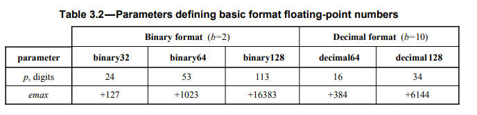
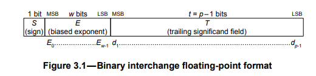

[CS] 부동소수점 알아보기
서론
이펙티브 자바의 “Item 60. 정확한 답이 필요하다면 float과 double은 피하라"에 대한 자료를 작성하며 정리한 부동소수점에 대한 정보들을 포스팅하고자 한다.
이진 부동소수점(binary floating point)
- 참고
- 진법과, 그에 따른
분수 표현에 있어 문제가 있음- 우리가 보통 사용하는
10진법의 경우,10의소인수를 사용하는 분수만 표현할 수 있음- ex) 1/2, 1/4, 1/5, 1/8, 1/10, …
- 반면, 1/3, 1/6, 1/7 과 같은 수는 분모가
3또는7과 같은소수를 사용하기 때문에,순환소수임- ex) 1/3을
10진법으로 나타내려면0.333....임
- ex) 1/3을
- 이처럼, 컴퓨터가 사용하는
2진법(binary)에서는2가유일한 소인수이기 때문에, 분모가 2인 분수만 소인수로 깔끔하게 표현할 수 있음- ex) 1/2, 1/4, 1/8, …
- 반면,
10진법에서 표현할 수 있던1/5,1/10은 2진수에서는순환소수로 표현됨- 따라서
0.1(1/10),0.2(1/5)와 같은 수는10진수에서는 깔끔한 소수이지만,2진수체계에서는순환소수임
- 따라서
- 만약
순환소수에 대해 연산을 수행할 경우, 이를2진수에서 사람이 읽을 수 있는10진수로 변환하는 과정에서 남은나머지 값들이 계속전달되게 됨- 이 때문에
0.1 + 0.2 != 0.3과 같은 문제가 발생하는 것
- 이 때문에
- 우리가 보통 사용하는
IEEE 754 - 이진 부동소수점의 표현 방식
- 부동소수점의 연산에 관한 표준인 IEEE 754에서는 실수의 유한한 하위 집합을 표현하는데 사용되는
부동소수점의 포맷을 정의포맷은기수(radix),정밀도(precision),지수 범위(exponent range)로 이뤄짐
- IEEE 754의 3절에서는
이진수 형식 3가지(32, 64, 128bit)와십진수 형식 2가지(64, 128bit)의기본 형식을 정의 -단정도(single precision) 부동소수점은 32bit짜리(binary32)에 해당하며,배정도(double precision) 부동소수점은 64bit짜리(binary64)에 해당함
사양 수준
부동소수점 산술은실수 산술의 체계적인근사치이므로,실수 연속체의유한 하위 집합만 표현할 수 있음- 또한, 이 표준의 산술이 기반하는
확장 실수(extends reals)는음수/양수 무한대(-infinity, +infinity)를 포함하는 실수의 집합- 따라서
부호를 갖는(signed) 0,유한한 0이 아닌 수,부호를 갖는 무한대,NaN와 같은 데이텀은부동 소수점 데이터 표현중 하나 이상에매핑될 수 있음 - 표현할 수 있는
유한 부동소수점 집합는 다음정수 매개변수들에 의해 정해짐- $b$ =
기수(2 또는 10) - $p$ = 정수부의 자릿수(
정밀도) - $emax$ = 최대 지수 e
- $emin$ = 최소 지수 e ($1-emax$)
p와emax는 위에서 언급한5가지 기본 형식에 따라 다르며, 각 형식은기수와비트수로 식별됨- 
- $b$ =
- 따라서
부호를 갖는 0과 0이 아닌 부동소수점 숫자는 다음과 같은 형태로 표현됨 $$ (-1)^{s} \times b^q \times c $$- s = 0 또는 1
- b =
기수(2 또는 10) - q = $emin \le q+p-1 \le emax$인 아무 정수
- c = 이진 문자열 $d_0d_1d_2 \ldots d_{p-1}$($d_i$ 정수 자릿수 $0 \le d_i \le b$)로 표현되는
숫자- 따라서 c는 $0 \le c \le b^p$
이진 교환 형식 인코딩

이진 교환 형식은 위처럼 3가지 부분으로 구성되어 있음S: 1 bit짜리 부호 비트. 0이면 양수, 1이면 음수E: w bit짜리 편향된 지수. ($E = e+bias$) (편향값인bias값 만큼 더하거나 뺀 수)- $w = round(4 \times log_2(k)) - 13$
- k = 비트 수(ex. binary64 -> k = 64)
- $bias = emax (2^{w-1} - 1)$
- $w = round(4 \times log_2(k)) - 13$
T: t(p-1) bit짜리 후행 부호 필드 이진 문자열. $T=d_1d_2 \ldots d_{p-1}$ 이며, 맨 앞의 비트인 $d_0$은 편향된 지수인 $E$에 암시적으로 인코딩 됨- $t = k - w - 1$
- 예시
- 32bit라면, S = 1bit, E = $round(4 \times log_2(32)) - 13 = 8$bit, T = $32 - 8 - 1 = 23$ bit
이진 부동소수점의 특별한 수
E(지수부)가 $2^{w}-1$, 즉 $emax + 1$ (지수부의 모든 비트가 1)이라면 다음과 같은 특수한 값을 나타냄T(가수부)가 0인 경우, 부호화된 $\infty$T가 0이 아닌 경우, $NaN$quiet NaN0/0,sqrt(-1),Infinity -Infinity와 같이 유효하지 않거나 사용할 수 없는 데이터 및 결과값에 대한 표현T의 첫 번째 비트(d1)가 1
signaling NaN- 초기화되지 않은 변수, 표준의 범위를 벗어난 연산에 대한 표현
T의 첫 번째 비트가 0- 대신 무한대와 구분하기 위해 다른 비트가 0이 아니어야 함
- 후행 필드들($d_2d_3 \ldots d_{p-1}$)이 진단 정보일 수 있는 페이로드 값을 가짐
- 반면, E도 0이고, T도 0인 경우 부호화된 0을 뜻함
서브노말
- $e = emin$, 즉 E가 0이면서 T가 0이 아닌 값을
비 정규값, 또는서브노말이라고 함 - 0과 극도로 가까운 값들을 표현하는데 사용
라운딩(Rounding)
- 무한한 정밀도를 요구하는,
무한소수와 같은 수에 대해부동소수점으로표현할 수 있는가장 가까운 매칭 값을 찾는 연산 roundTiesToEven,roundTiesToAway,roundTowardPositive등의 방법들이 있지만,이진 포맷에서는roundTiesToEven가 디폴트roundTiesToEven: 무한 정밀도 숫자와 가장 가까운 두부동소수점 숫자가 있을 경우, 반올림 결과의가장 낮은 자리수가짝수인 값을 선택- 예시
- 1.40 -> 1
- 1.50 -> 2
- 2.50 -> 2
- -1.50 -> -2
- 예시
10진수를 이진 부동소수점으로 변환하기
- 10진수를
이진 부동소수점으로 변환하는 과정은 다음과 같음- 부호(양수 또는 음수)에 따라
부호 비트를 설정함 - 10진수의
정수부와소수부를2의 거듭제곱들의 합으로 치환하여, 각 거듭제곱들의지수를이진 비트로 기록함- ex) 118.625 라는 수를 2의 거듭제곱 합으로 분해하면
- 118 = $2^6$ + $2^5$ + $2^4$ + $2^2$ + $2^1$ = $1110110_2$
- 0.625 = $\frac{1}{2^1} + \frac{1}{2^3}$ = $0.101_2$
- 118.625 = $1110110.101_2$
- ex) 118.625 라는 수를 2의 거듭제곱 합으로 분해하면
- 정규화를 하여, 소수점 왼쪽에는 하나의 수만 남도록 함
- $1110110.101_2$ -> $1.110110101_2 \times 2^6$
- 정규화된 수의 2의 거듭제곱 부분의
지수(위 예시에서는 6)가 $e$가 되며, 지수부 $E = e + bias$ 라고 했으므로 편향값인 $bias$를 더해주면지수부값이 됨- $E = 6 + 127 = 133 = 10000101_2$
- 반면, 소수부(소수점 아래 부분수)의 값들으이 오른쪽에 0으로 채워넣어 $t$ 비트만큼의 이진 문자열을 만들면 이것이
가수부가 됨- $T = 11011010100000000000000$
- 부호(양수 또는 음수)에 따라
부동소수점 연산
덧셈및뺄셈- 두 수의 지수가 다를 경우,
지수가 작은 쪽을 큰 쪽에맞춤- 작은 쪽의 가수를
오른쪽으로 시프트하여 맞춤
- 작은 쪽의 가수를
- 가수를 더하거나, 뺌
- 이때 가수의 덧셈과 뺄셈은 이진수 덧셈/뺄셈과 같은 방식으로 이루어짐
- ex) $0101_2$ + $1001_2$ = $1110_2$
- 연산 결과가 $1.XXXX \times 2^n$ 과 맞지 않으면
정규화수행 - 필요하다면
반올림및언더/오버플로우처리- 결과가 너무 작으면 0, 너무 크면 $\infty$로 처리
- 두 수의 지수가 다를 경우,
곱셈및나눗셈- 두 수의 지수를
더하거나,뺌- 뺄 때는
나누어지는 수의 지수 - 나누는 수의 지수
- 뺄 때는
- 가수끼리 정수 곱셈하듯 곱하거나, 정수 나눗셈하듯 나눔
정규화수행- 필요하다면 반올림 및 언더/오버플로우 처리
- 두 수의 지수를
예시) 0.1 + 0.2
0.1과0.2를 각각 부동소수점 표현으로 변환- 소수를 2진수로 변환하기 위해서는 다음과 같은 과정 거침
- 소수 부분을 2로 곱한 뒤, 정수 부분 저장
- 소수 부분만 남긴 채, 다시 2를 곱함
- 위 두 단계를 소수 부분이 0이 되거나, 포맷에서 지원하는 자릿수까지 반복
- 소수를 2진수로 변환하기 위해서는 다음과 같은 과정 거침
- 0.1의 경우, 다음과 같이 반복됨
| 10진수 값 × 2 | 정수부분 | 소수 부분 |
|---|---|---|
| 0.1 × 2 | 0 | 0.2 |
| 0.2 × 2 | 0 | 0.4 |
| 0.4 × 2 | 0 | 0.8 |
| 0.8 × 2 | 1 | 0.6 |
| 0.6 × 2 | 1 | 0.2 |
| 0.2 × 2 | 0 | 0.4 |
| 0.4 × 2 | 0 | 0.8 |
| 0.8 × 2 | 1 | 0.6 |
| 0.6 × 2 | 1 | 0.2 |
- 첫 번째 0 이후, 0011이 계속해서 나옴
0.000110011001100...을 정규화 할 경우1.1001100110011001100110011₂ × 2⁻⁴가 됨- 이때, 가수 부분은 23비트 만큼만 저장
- 즉, 0.1은
지수가 (-4 + 127(bias)) = 123 =01111011₂이고,가수가10011001100110011001101인 수로 표현 - 0.2는 위 표에서 볼 수 있듯 왼쪽으로 한 칸 쉬프트된 0.1이라고 볼 수 있음
- 따라서 0.2는
지수가 (-3 + 127(bias)) = 124 =01111100₂이고,가수가10011001100110011001101인 수로 표현
- 따라서 0.2는
- 둘을 더하기 위해서는 지수를 맞춰주어야 하므로 지수가 작은 0.1을 0.2에 맞춤
- 따라서 0.1의 가수들을 오른쪽으로 한 칸 시프트해, 지수를 -3으로 변환
- 가수는
1.10011001100110011001101->0.110011001100110011001101
- 이후 가수끼리 덧셈
0.110011001100110011001101(0.1) +1.10011001100110011001101(0.2) =10.01100110011001100110010 * 2⁻³
- 구한 가수를 정규화하기 위해 오른쪽으로 시프트
1.00110011001100110011001 * 2⁻²
- 위 값은 정확히 0.3이 아니므로, 0.1 + 0.2 != 0.3와 같은 문제 발생
해결책?
BigDecimal first = BigDecimal.valueOf(0.1);
BigDecimal second = BigDecimal.valueOf(0.2);
BigDecimal result = first.add(second);
System.out.println(BigDecimal.valueOf(0.3).equals(result)); // true
- 표현 가능한 값의 범위가 $-10^{-999999999} \sim 10^{999999999}$ 까지로 훨씬 넓은 BigDecimal을 쓸 것을 권장
참고
- Number Representations - Floating Point Numbers : 4190.308 Computer Architecture
- Floating Point 부동소수점 - 기계인간 John Grib
- Double Precision Issue in Java | Baeldung
- IEEE 754 - Wikipedia
- Floating-point arithmetic - Wikipedia
- IEEE 부동 소수점 오류의 이해를 위한 자습서
- Sci-Hub | | 10.1109/IEEESTD.2019.8766229
- Special Float Values (GNU C Language Manual)
- 부동소수점 편향된 지수 Biased Exponent | 블로그 | 모두의연구소